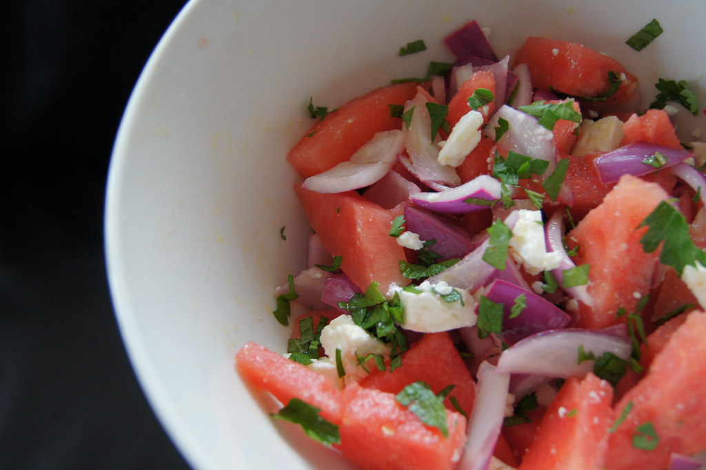

Watermelon and Tomato Salad

Watermelon and tomato salad
Ingredients
- 1 pint cherry tomatoes, halved
- 2 cups cubed seeded watermelon
- 6 large basil leaves, thinly sliced
- 1/2 cup crumbled feta cheese
- 1 teaspoon lemon zest
- 2 tablespoons extra-virgin olive oil
- 1 1/2 tablespoons white balsamic vinegar
- salt and pepper to taste
Steps
-
Place the tomatoes and watermelon into a mixing bowl. Sprinkle with the basil, feta
cheese, and lemon zest. Drizzle with olive oil and balsamic vinegar. Toss gently.
Season to taste with salt and pepper before serving.